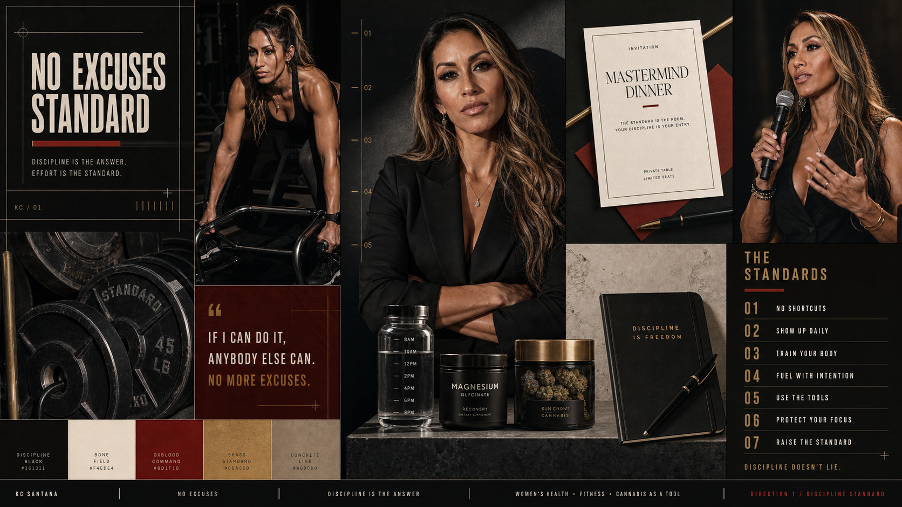

No Excuses statement post
One hard belief, one image, one action.
A severe, luxurious, geometric authority system for KC as the living proof that discipline beats shortcuts.
This raster board is the lead proposal artifact for the direction. Treat it as discussion material, not logo approval, not final public imagery, and not identity canon.

This direction makes KC feel like the standard itself. It is the most literal reading of No Excuses: hard structure, adult femininity, black-bone-oxblood contrast, event authority, and visible training discipline.
Speaking, strong social statements, event positioning, high-standard mentorship, and anti-shortcut point-of-view content.
If pushed too hard, it can become punishing fitness or body-shaming. The copy must keep the target on behavior, not bodies.
These slider positions explain the strategic difference between options. They are a clarity tool, not a command to redesign the Brand OS page chrome.
These colors belong to this option only. They are shown so Florian can evaluate the territory; they do not become the client Brand OS shell unless the identity is later selected and built.
These examples describe where the direction might be useful if selected. They are not production designs and do not change the FP review shell.
One hard belief, one image, one action.
Invitation system for women stepping into the room.
KC as proof, not a motivational host.
Cannabis shown like magnesium or creatine, not a lifestyle flag.
Brand Therapy is about strategic clarity before design. Keep the option useful enough to choose a direction, then stop.
Speaking, strong social statements, event positioning, high-standard mentorship, and anti-shortcut point-of-view content.
Your creative directions are built and waiting. They unlock the moment we confirm your Focus Star together.
Review the strategy first →